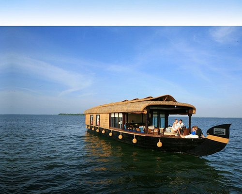

Affectionately nicknamed the 'Venice of the East' by travellers from across the world, Alappuzha is a district of immense natural beauty. Embraced by the Arabian Sea in the west and a network of lakes, lagoons and freshwater rivers criss-crossing it, this backwater country is home toa vibrant animal and avian life. By virtue of its proximity to the sea, the town has always carved out an exclusive place for itself in the maritime history of Kerala. Renowned for its boat races, beaches, marine products and coir industry, the singularity of this land is the region called Kuttanad. A land of lush paddy fields referred to as the 'Rice Bowl of Kerala', it is one of the few places in the world where farming is done below sea level. This once prosperous trading and fishing centre is nowadays a world renowned backwater tourist destination. Alappuzha is a Land Mark between the broad Arabian sea and a network of rivers flowing into it.In the early first decade of the 20th Century the then Viceroy of the Indian Empire, Lord Curzon made a visit in the State to Alleppey, now Alappuzha. Fascinated by the Scenic beauty of the place, in joy and amazement, he said, “Here nature has spent up on the land her richest bounties”. In his exhilaration, it is said, he exclaimed, “Alleppey, the Venice of the East”. Thus the sobriquet found its place in the world Tourism Map. The presence of a port and a pier, criss -cross roads and numerous bridges across them, a long and unbroken sea coast might have motivated him to make this comparison. Alleppey has a wonderful past. Though the present town owes its existence to the sagacious Diwan Rajakesavadas in the second half of 18th century, district of Alappuzha figures in classified Literature. Kuttanad, the rice bowl of Kerala with the unending stretch of paddy fields, small streams and canals with lush green coconut palms , was well known even from the early periods of the Sangam age. History says Alappuzha had trade relations with ancient Greece and Rome in B.C and in the Middle Ages.

ST.MARY'S FORANE CHURCH

ALLEPPEY BACK WATERS